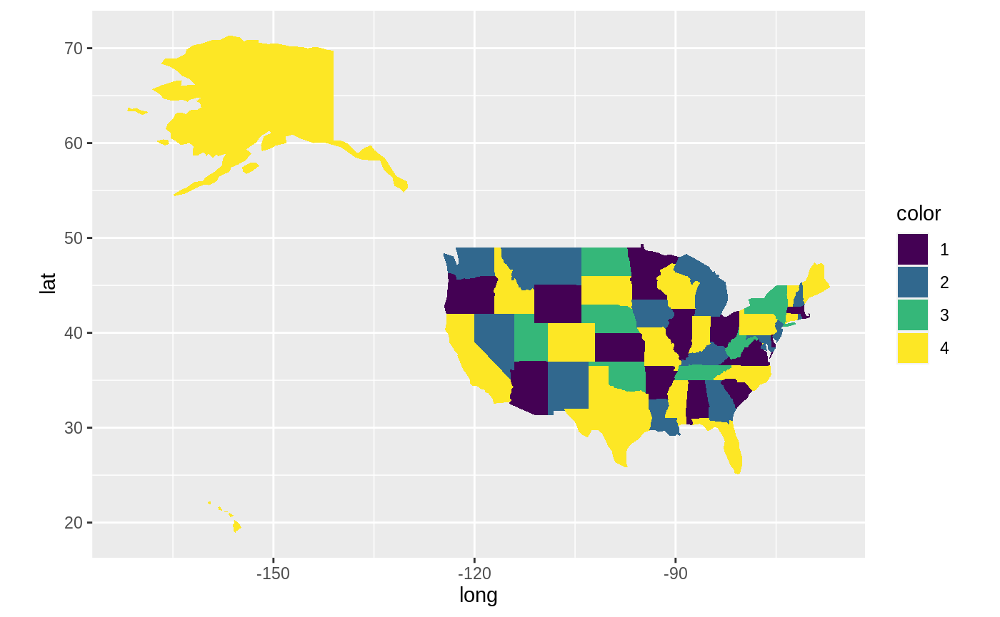

problem-graph-coloring.RmdIn this article we will model the minimum graph coloring problem. The goal: color a map with as few colors as possible while no two adjacent regions having the same color.
First, let’s load some useful packages needed for (spatial) data processing.
Then we read in the 50 states of the US.
# data from https://github.com/datasets/geo-boundaries-us-110m
# reference data from here: https://github.com/nvkelso/natural-earth-vector/tree/master/110m_cultural
# License of reference data: public domain (https://github.com/nvkelso/natural-earth-vector/blob/master/LICENSE.md)
map_data <- rgdal::readOGR("https://raw.githubusercontent.com/datasets/geo-boundaries-us-110m/84e946f6b1de01e2642bcdb17d5b697acb6b48c4/json/ne_110m_admin_1_states_provinces_shp_scale_rank.geojson")## OGR data source with driver: GeoJSON
## Source: "https://raw.githubusercontent.com/datasets/geo-boundaries-us-110m/84e946f6b1de01e2642bcdb17d5b697acb6b48c4/json/ne_110m_admin_1_states_provinces_shp_scale_rank.geojson", layer: "ne_110m_admin_1_states_provinces_shp_scale_rank"
## with 51 features
## It has 3 fieldsNext step is to create an adjacency list to determine neighboring states.
# this gives as an adjancy list
neighbors <- spdep::poly2nb(map_data)
# a helper function that determines if two nodes are adjacent
is_adjacent <- function(i, j) {
purrr::map2_lgl(i, j, ~ .y %in% neighbors[[.x]])
}We can then ask:
## [1] FALSE## [1] TRUENext, we will model the problem with rmpk as a mixed integer linear program that tries to find a coloring with as few colors as possible.
n <- nrow(map_data@data) # number of nodes aka states
max_colors <- 4 # 4 should be enough. But you increase this number.
# based on the formulation from here
# http://wwwhome.math.utwente.nl/~uetzm/do/IP-FKS.pdf
model <- MIPModel(ROI_solver("glpk", control = list(presolve = TRUE, verbose = TRUE)))
# 1 iff node i has color k
x <- model$add_variable(x[i, k], type = "integer", i = 1:n, k = 1:max_colors, lb = 0, ub = 1)
# 1 iff color k is used
y <- model$add_variable(y[k], type = "binary", k = 1:max_colors)
# minimize colors
# multiply by k for symmetrie breaking (signifcant diff. in solution time)
model$set_objective(sum_expr(k * y[k], k = 1:max_colors), sense = "min")
# each node is colored
model$add_constraint(sum_expr(x[i, k], k = 1:max_colors) == 1, i = 1:n)
# if a color k is used, set y[k] to 1
model$add_constraint(x[i, k] <= y[k], i = 1:n, k = 1:max_colors)
# no adjacent nodes have the same color
for (i in 1:n) {
for (j in 1:n) {
if (is_adjacent(i, j)) {
model$add_constraint(x[i, k] + x[j, k] <= 1, k = 1:max_colors)
}
}
}
# we could also set some states to specific colors and see if
# that still produces a valid coloring.
model$set_bounds(x[1, 1], lb = 1)
model$set_bounds(x[2, 2], lb = 1)
model$set_bounds(x[3, 3], lb = 1)
model$set_bounds(x[4, 4], lb = 1)## MIP Model:
## Variables: 208
## Constraints: 1135## <SOLVER MSG> ----
## GLPK Simplex Optimizer, v4.57
## 1135 rows, 208 columns, 2372 non-zeros
## Preprocessing...
## 766 rows, 175 columns, 1615 non-zeros
## Scaling...
## A: min|aij| = 1.000e+00 max|aij| = 1.000e+00 ratio = 1.000e+00
## Problem data seem to be well scaled
## Constructing initial basis...
## Size of triangular part is 766
## 0: obj = 1.000000000e+01 inf = 1.760e+02 (176)
## 73: obj = 1.000000000e+01 inf = 0.000e+00 (0)
## OPTIMAL LP SOLUTION FOUND
## GLPK Integer Optimizer, v4.57
## 1135 rows, 208 columns, 2372 non-zeros
## 208 integer variables, 204 of which are binary
## Preprocessing...
## 766 rows, 176 columns, 1616 non-zeros
## 176 integer variables, all of which are binary
## Scaling...
## A: min|aij| = 1.000e+00 max|aij| = 1.000e+00 ratio = 1.000e+00
## Problem data seem to be well scaled
## Constructing initial basis...
## Size of triangular part is 766
## Solving LP relaxation...
## GLPK Simplex Optimizer, v4.57
## 766 rows, 176 columns, 1616 non-zeros
## 146: obj = 1.000000000e+01 inf = 0.000e+00 (0)
## OPTIMAL LP SOLUTION FOUND
## Integer optimization begins...
## + 146: mip = not found yet >= -inf (1; 0)
## + 252: >>>>> 1.000000000e+01 >= 1.000000000e+01 0.0% (18; 0)
## + 252: mip = 1.000000000e+01 >= tree is empty 0.0% (0; 35)
## INTEGER OPTIMAL SOLUTION FOUND
## <!SOLVER MSG> ----Yay. We found the minimal coloring with 4 colors.
Last step is to plot the result. First we will get the colors from the optimal solution.
## name i k value
## 1 x 1 1 1
## 2 x 2 2 1
## 3 x 3 3 1
## 4 x 4 4 1
## 5 x 5 4 1Then we need to prepare the data for ggplot and join the colors to the data.
library(ggplot2)
color_data <- map_data@data
color_data$color <- assigned_colors$k
plot_data_fort <- fortify(map_data, region = "adm1_code") %>%
left_join(select(color_data, adm1_code, color),
by = c("id" = "adm1_code")) %>%
mutate(color = factor(color))Now we have everything to plot it:
ggplot(plot_data_fort, aes(x = long, y = lat, group = group)) +
geom_polygon(aes(fill = color)) +
coord_quickmap() +
viridis::scale_fill_viridis(discrete = TRUE, option = "D")
Do you have any questions, ideas, comments? Or did you find a mistake? Let’s discuss on Github.